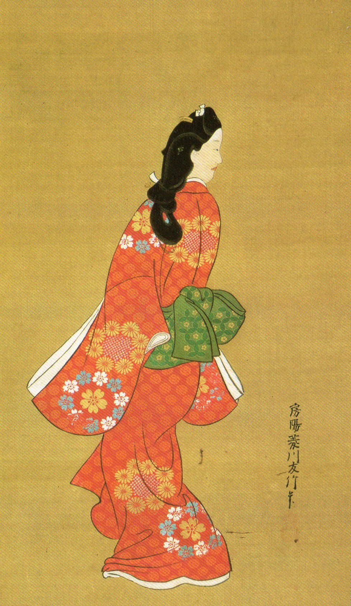

發展
浮世繪的藝術，初期原始肉筆浮世繪，即畫家們用筆墨色彩所作的繪畫，而非木刻印制的繪畫。肉筆的浮世繪，盛行于京都和大闆，這個畫派的開始，是帶有裝飾性的。 它在華貴的建築作壁畫，裝飾室內的屏風。在繪畫的內容上，有濃郁的本土氣息，有四季風景、各地名勝，尤其善于表現女性美，有很高的寫實技巧，受社會所欣賞。 這些大和繪師的技術成就，代代相傳，遂為其後的浮世繪藝術，開導了先路。 木版畫最初是被當作佛教經典的印刷技術以及插畫技術從中國傳入日本的。1660年左右，這種技術不再只用於插畫，開始用於單張繪畫。 畫家菱川師宣製作了第一張單張繪畫，木版畫以此為契機迅速發展起來。

▲菱川師宣的代表作
《回首美人圖》
▲ 肉體浮世繪
畫風演變
由於經濟的增長，城市裡首先產生一種「町人文化」(即市民文化)。市民文化迅速得到發展，作者雲起，需要量擴大，大量印製，以供需求。
從而使肉筆浮世繪進入版畫浮世繪階段。浮世繪版畫的印刷技巧，初為單純的墨摺本，以後發展有丹繪和漆繪，用彩筆添入的。
真正的套色版畫錦繪，在公元1643年至公元1765年前後出現浮世繪的印刷技術，浮世繪的題材極其廣泛，有社會時事、民間傳說、歷史掌故、戲曲場景和古典名著圖繪
，有些畫家還專事描繪婦女生活，記錄戰爭事件或山川景物。這些題材的是體現新興市民的思想感情。一些追求自由戀愛和諷刺封建禮教的作品在民間流布極廣。
明和2年（1765年）至文化3年（1806年）。錦繪在此時期誕生。
因為畫歷在俳句詩人及愛好者間十分受歡迎，明和2年開始有了畫歷交換會的社交活動。為因應這種大量需求，浮世繪的專業分工體制也在此時期確立。
此時期的人物繪畫風格也發生變化，由原本虛幻的人偶風格轉趨寫實。
安永年間（1772年—1780年），北尾重政寫實風格的美人畫盛行。勝川春章則將寫實風帶入稱為「役者繪」的歌舞伎肖像畫中。之後著名的喜多川歌麿更以細膩的筆觸繪製了許多以頭部為主的美人畫。
▲役者繪
後期變革
江戶後期，美人畫和役者繪逐漸走向衰落，這時興起的風景畫成為浮世繪的最後一道盛宴。浮世繪風景畫大多以名勝為題材，隨著交通網的發達、經濟水平的提高，平民旅行熱不斷升溫，富裕起來的江戶平民擁有較大的國內旅行自由，
各地道路交通和沿途食宿設施日趨完善，從偏遠的山坳到汪洋中的孤島，都有道路或舟船連接，由此催生了大量以風景名勝為題材的浮世繪系列，日本人的親近自然之情在畫面中溫和地滲透出來。
明治維新之後，文明開化的潮流深刻影響了浮世繪的製作。儘管還有一些浮世繪出版商和畫師繼續維持著製作銷售，但潮水般湧來的歐洲時尚使他們的最後一點靈感煙消雲散。
在日本社會發生重大轉型的過程中，近代資本主義工業體系使得耗時低效的民間手工藝作坊急速式微。浮世繪也不例外，新技法與新樣式的拓展無以為繼，藝術性也日趨低落，迎來了無奈的末日。
▲近代浮世繪
後世影響
浮世繪版畫對世界美術史的作用，應該提到它對當時歐洲畫壇的巨大影響。 早在喜多川歌磨死去僅6年的1812年，他的作品就出現在巴黎。19世紀後半期， 浮世繪被大量介紹到西方。當時西方的前衛畫家，如馬奈、惠斯勒、德加、莫奈、勞特累克、凡高、高更、溥納爾、畢加索、 馬蒂斯等人都從浮世繪中獲得各種有意義的啟迪，如：無影平塗的色彩價值，取材日常生活的藝術深度，自由而機智的構圖， 對瞬息萬變的自然的敏感把握。對日本藝術的崇拜，以緻在西歐產生日本主義熱潮，它不僅推動了從印象主義到後印象主義的繪畫運動， 而且在西方向現代主義文化的發展中發揮了廣泛的影響。
▲葛飾北齋《神奈川沖浪裡裏》與梵谷《星夜》繪畫風格上有許多相似之處
▲葛飾北齋《神奈川沖浪裡裏》與梵谷《星夜》
繪畫風格上有許多相似之處